Transform raw lines into professional, publication-ready visualizations. Learn how to add context with titles, specify precise physical units, format multi-column legends, calibrate major/minor grids, and master the object-oriented API.
Imagine karo tumne college ke students ke semester performance ka graph plot kar diya. Graph par ek badhiya blue line upar jaa rahi hai, lekin na koi title hai, na X-axis par label hai, aur na Y-axis par units hain!
Viewer ya examiner ko kaise pata chalega ki:
Data science mein kaha jaata hai: "A chart without labels is not data visualization; it is just abstract art!" Context hi ek graph ko actionable aur reliable decision-making tool banata hai.
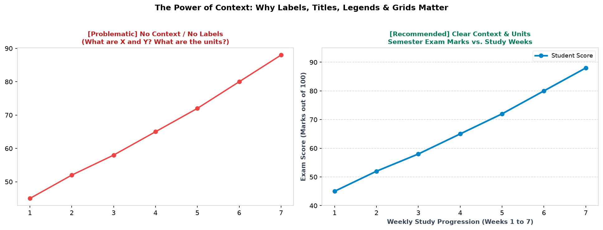
Figure 10.1: Context benchmark. Left: Cryptic chart with zero context. Right: Professional chart with clear title, descriptive axis labels with units, legend, and subtle grid lines.
Ek accha title chart ka purpose define karta hai. Vague titles (jaise "My Graph", "Plot 1", ya "Data") lagane se bachein. Title ko informative aur specific banayein:
import matplotlib.pyplot as plt
weeks = ['W1', 'W2', 'W3', 'W4', 'W5', 'W6']
study_hrs = [12, 15, 18, 22, 25, 28]
fig, ax = plt.subplots(figsize=(8, 4.5), dpi=150)
ax.plot(weeks, study_hrs, color='#0284c7', linewidth=2.5, marker='s')
# Formatted title with padding and styling
ax.set_title("Weekly Dedicated Coding Hours (Sprint 1 to 6)",
fontsize=12, fontweight='bold', color='#0f172a', pad=14, loc='center')
ax.set_xlabel("Development Sprints (2-Week Intervals)", fontsize=10, fontweight='bold')
ax.set_ylabel("Total Hours Logged (Hours)", fontsize=10, fontweight='bold')
ax.grid(axis='y', linestyle='--', alpha=0.5)
fig.tight_layout()
plt.show()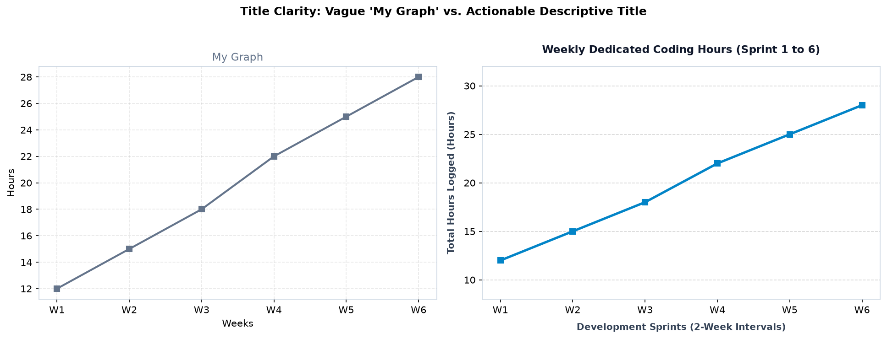
Figure 10.2: Title formatting. Left: Vague 'My Graph'. Right: Professional title explaining what was measured and the sprint timeline.
Key Title Parameters:
fontsize: Title ka size (usually 11 to 14 pt).fontweight='bold': Title ko visual hierarchy mein sabse upar highlight karta hai.pad=14: Title aur chart ke top axis boundary ke beech vertical breathing room create karta hai.loc='left' | 'center' | 'right': Title ka alignment (modern dashboards mein loc='left' bohot popular hai).Axis labels mein sabse badi beginner mistake hoti hai Units omit karna. Agar aap Y-axis par sirf "Speed" likhenge, toh reader ko nahi pata chalega ki speed km/h mein hai ya mph mein!
Variable Name (Units).Study Time (Hours), Revenue (in Lakhs INR), Temperature (°C), Accuracy (%).
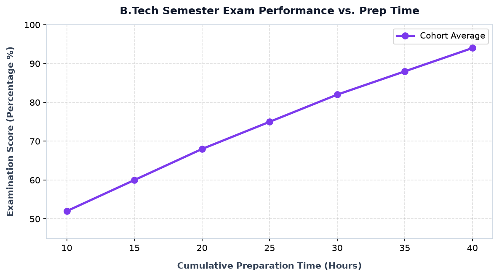
Figure 10.3: Explicit units in labels: 'Cumulative Preparation Time (Hours)' on X-axis and 'Examination Score (Percentage %)' on Y-axis.
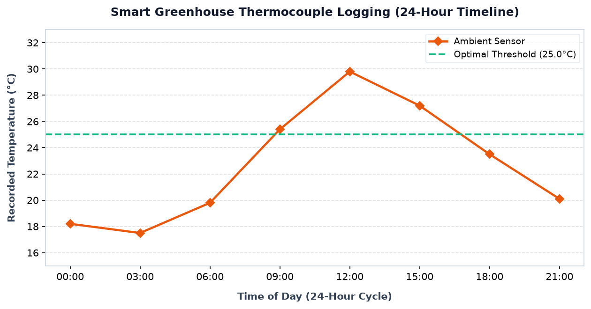
Figure 10.4: Environmental IoT time-series with 'Time of Day (24-Hour Cycle)' and 'Recorded Temperature (°C)'.
Kabhi-kabhi axis labels tick numbers ke bohot paas aa jaate hain jisse text crowded lagta hai. Is issue ko fix karne ke liye hum labelpad use karte hain:
# labelpad adds distance (in points) between ticks and the label
ax.set_xlabel("Time of Day (24-Hour Cycle)", fontsize=10, fontweight='bold', labelpad=10)
ax.set_ylabel("Recorded Temperature (°C)", fontsize=10, fontweight='bold', labelpad=10)fontsize=12-14 aur fontweight='bold' rakhein, axis labels ko fontsize=10-11, aur tick numbers ko fontsize=8.5-9.5 rakhein. Yeh ek clean, effortless visual hierarchy establish karta hai.
Jab ek hi chart par do ya do se zyada lines, bars ya scatters plot kiye jaate hain, toh Legend batata hai ki kaunsa color ya marker kis category ko belong karta hai.
Two-Step Workflow:
label="..." pass kijiye: ax.plot(x, y1, label='Actual Sales').ax.legend() call kijiye taaki legend box render ho!ax.plot() mein label argument nahi denge aur direct ax.legend() call karenge, toh Matplotlib warning dega: "No artists with labels found to put in legend" aur legend blank aayega!
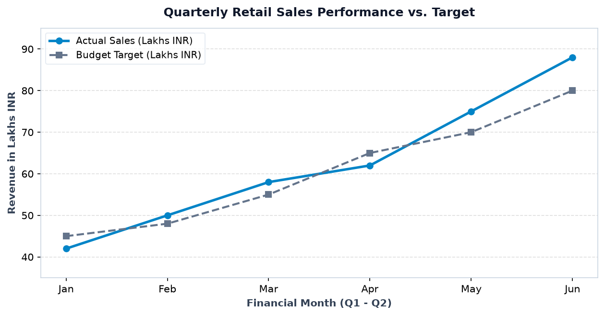
Figure 10.5: Multi-line comparison. Solid blue line represents 'Actual Sales' and dashed grey line represents 'Budget Target'.
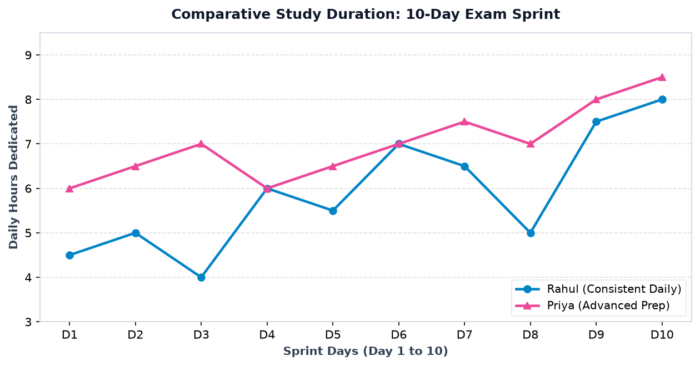
Figure 10.6: Rahul vs Priya 10-day exam sprint study comparison with clearly labeled markers.
Legend chart ke data points ko cover na kare, iske liye Matplotlib bohot saare location options deta hai:
| Parameter | Supported Values | Description & Use Case |
|---|---|---|
loc |
'best', 'upper left', 'upper right', 'lower left', 'center' |
Chart ke andar legend ki placement. 'best' automatically sabse kam crowded corner choose karta hai. |
ncols |
Integer (e.g. ncols=2 or ncols=4) |
Legend items ko multiple horizontal columns mein arrange karta hai. |
title |
String | Legend header title (e.g. title='Engineering Domains'). |
frameon |
True / False |
Legend box ke chaaron taraf background border dikhana ya hide karna. |
bbox_to_anchor |
Tuple: (x, y) (e.g. (1.02, 1.0)) |
Legend ko plotting axes ke bahar place karne ke liye use hota hai! |
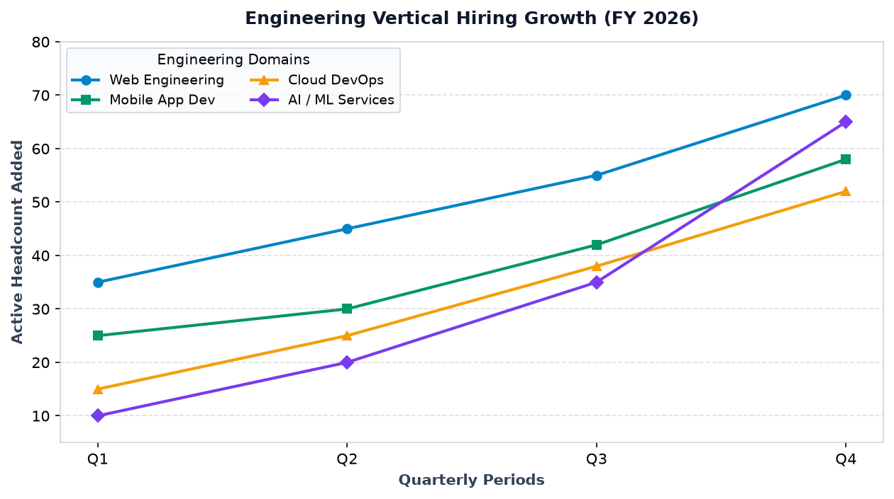
Figure 10.7: Engineering vertical hiring. Legend customized with title='Engineering Domains', ncols=2, and soft rounded frame.
Jab plotting area crowded ho aur chart ke andar jagah na bache, toh legend ko chart ke right side bahar shift kar dein:
# Move legend outside the right boundary
ax.legend(title="Domains", loc='upper left', bbox_to_anchor=(1.02, 1.0),
frameon=True, facecolor='white', edgecolor='#e2e8f0')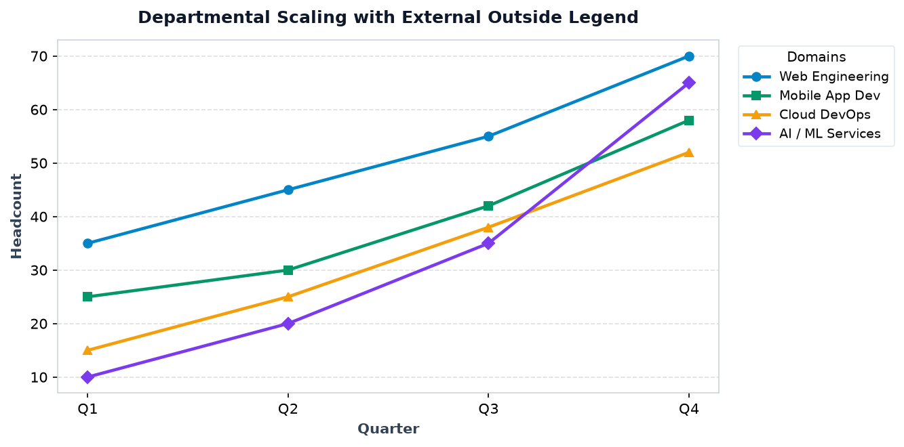
Figure 10.8: External legend placed outside the plotting axis (bbox_to_anchor=(1.02, 1.0)). Notice zero data points are obscured!
Grid lines viewer ko graph ke kisi bhi point se X aur Y axis ke values ko effortlessly eye-track karne mein madad karti hain. Bina grid ke, kisi point ki exact value estimate karna mushkil hota hai.
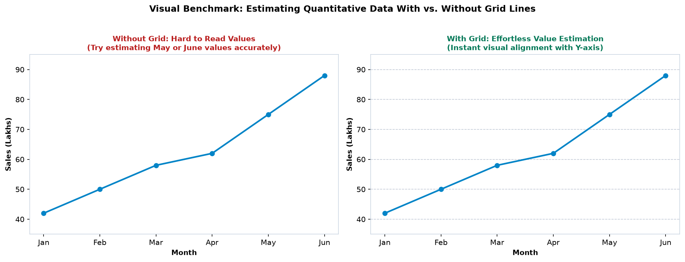
Figure 10.9: Left: Without grid lines, estimating May or June sales requires guessing. Right: With subtle grid lines (axis='y', linestyle='--', alpha=0.6), estimation is instantaneous.
color='#94a3b8' ya '#cbd5e1' aur alpha=0.4 se 0.6.ax.grid(axis='y', linestyle='--').Engineering, scientific research aur financial data mein aksar do types ke grids hote hain:
# 1. Turn on minor ticks
ax.minorticks_on()
# 2. Major grid: clean solid lines
ax.grid(which='major', linestyle='-', linewidth=0.9, color='#cbd5e1')
# 3. Minor grid: subtle dotted lines
ax.grid(which='minor', linestyle=':', linewidth=0.6, color='#e2e8f0', alpha=0.7)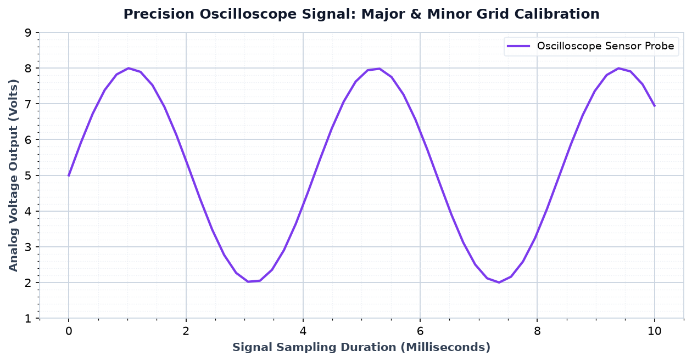
Figure 10.10: Oscilloscope signal calibration. Solid major grid lines at integer voltage levels and dotted minor grid lines in between allow precise reading.
Jab category names lambe hote hain (e.g. "Consumer Electronics & Mobile", "Cybersecurity & Network Defense"), toh woh ek doosre ke upar overlap ho jaate hain. Iska clean solution hai ticks ko rotate karna:
ax.set_xticks(range(len(categories)))
ax.set_xticklabels(categories, rotation=35, ha='right', fontsize=9, fontweight='bold')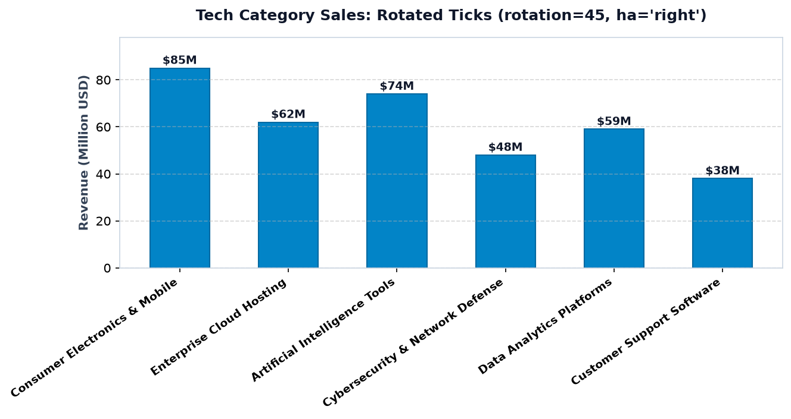
Figure 10.11: Long product categories rotated 35° with ha='right'. Labels remain completely legible without overlapping.
ha='right' (horizontal alignment = right) pass karein. Isse text ka end point tick mark ke theek neeche align ho jata hai!
Jab aap ek production dashboard chart banate hain, toh yeh sabhi elements ek coordinated visual harmony mein kaam karte hain:
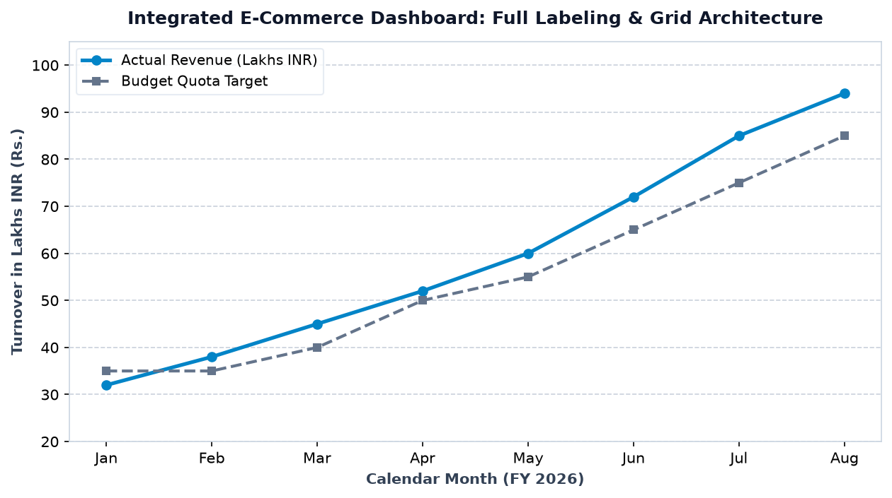
Figure 10.12: Fully integrated production chart. Informative title, precise units, contrasting multi-series legend, subtle horizontal grid, and clean ticks.
Beginners aksar plt.title() aur ax.set_title() mein confuse hote hain. Dono ka equivalence table note kijiye:
Functional API (pyplot) |
Object-Oriented API (Axes) |
Purpose |
|---|---|---|
plt.title("...") |
ax.set_title("...") |
Sets title for the specific chart axis |
plt.xlabel("...") |
ax.set_xlabel("...") |
Labels the horizontal X-axis |
plt.ylabel("...") |
ax.set_ylabel("...") |
Labels the vertical Y-axis |
plt.legend() |
ax.legend() |
Renders legend box for the axis |
plt.grid() |
ax.grid() |
Toggles and styles grid lines |
plt.xticks() |
ax.set_xticks() / ax.set_xticklabels() |
Controls tick mark positions and text |
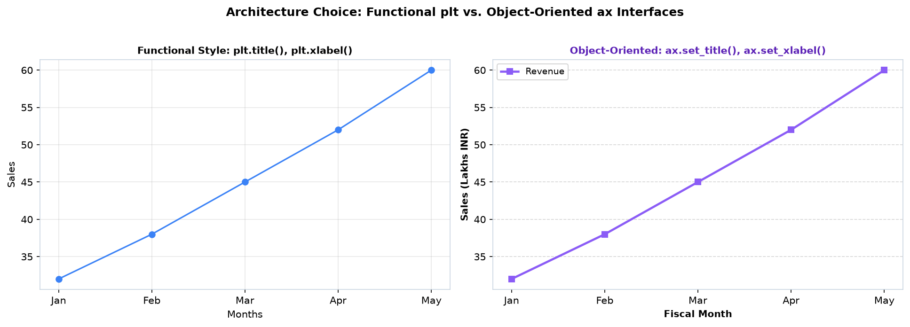
Figure 10.13: Comparing pyplot functional scripting style vs object-oriented modular architecture.
Jab aapke figure mein multiple subplots hote hain (e.g. Panel 1 for Study Hours aur Panel 2 for Exam Marks), toh har subplot ka apna individual ax.set_title() hota hai, aur poore dashboard ka ek overall super-title hota hai jo fig.suptitle() se banta hai:
fig, (ax1, ax2) = plt.subplots(1, 2, figsize=(13, 4.8), dpi=150)
# Subplot 1 title
ax1.set_title("1. Monthly Study Commitment", fontsize=11, fontweight='bold')
ax1.set_ylabel("Total Study Duration (Hours)")
# Subplot 2 title
ax2.set_title("2. Final Examination Scores", fontsize=11, fontweight='bold')
ax2.set_ylabel("Marks Scored (%)")
# Overall Dashboard Super-Title
fig.suptitle("Academic Cohort Evaluation Dashboard (Shared Figure Title: fig.suptitle)",
fontsize=13, fontweight='bold', y=1.02)
fig.tight_layout()
plt.show()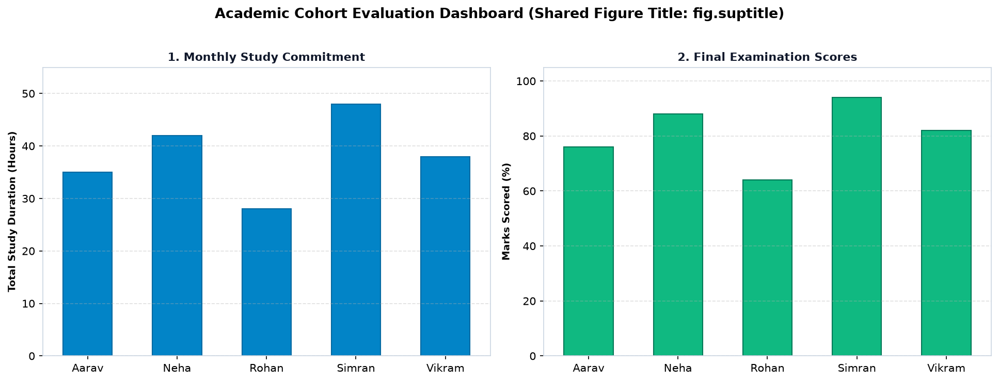
Figure 10.14: Multi-panel figure. Notice the shared overarching title (fig.suptitle) at the top and distinct individual titles for each subplot panel.
Aksar students jab graph ko PNG image ke roop mein save karte hain, toh external legends ya long titles cut-off ho jaate hain. Iska universal fix hai bbox_inches='tight':
# Production save command
fig.savefig(
"topic10_chart.png",
dpi=150, # High quality print resolution
bbox_inches="tight" # Automatically calculates bounding box to include legends & titles!
)Mistake: Y-axis par sirf "Income" likhna.
Fix: Specify currency: "Monthly Income (INR ₹)".
Mistake: plot(x, y) bina label ke aur direct legend().
Fix: Always pass label='Series Name' in plot calls.
Mistake: Titling chart "My Plot" or "Graph 1".
Fix: Use descriptive titles: "Quarterly Revenue Growth (FY 2026)".
Mistake: Dark black solid grids overpowering data points.
Fix: Use soft grey lines: alpha=0.4, linestyle='--'.
Mistake: Default legend critical curves ko cover kar raha hai.
Fix: Move outside with bbox_to_anchor=(1.02, 1).
Mistake: Rotated labels without alignment colliding with axes.
Fix: Always set ha='right' when rotating ticks.
Mistake: fig.suptitle subplot headings par overlap ho jana.
Fix: Set y=1.02 and call tight_layout().
Mistake: Manually setting xticklabels without setting xticks.
Fix: Call ax.set_xticks() first, then set_xticklabels().
Mistake: Labels touching axis numbers tightly.
Fix: Add breathing space: labelpad=8, pad=12.
Mistake: Subplot 1 has 14pt text, Subplot 2 has 8pt text.
Fix: Standardize font sizes across all subplots.
Mistake: Adding dense minor grids to simple bar charts.
Fix: Minor grids are only for precision signal/scientific data.
Mistake: Outside legend cut off in exported PNG image.
Fix: Always pass bbox_inches='tight' in savefig.
Scenario: College faculty ne 10 students ke weekly study hours aur unke semester exam marks ka correlation analyze kiya:
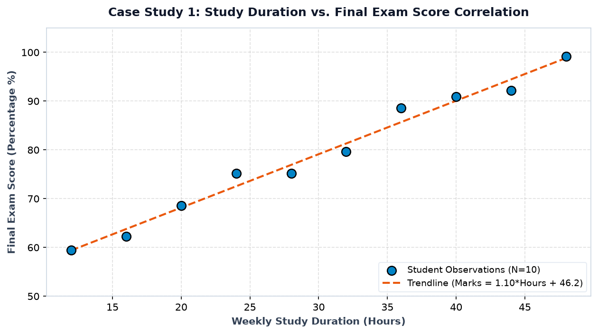
Figure 10.15: Case Study 1. Scatter observations paired with linear regression trendline (Marks = 1.10*Hours + 46.2).
Scenario: E-commerce store ke H2 FY26 revenue ka multi-category comparison (Gadgets vs Fashion vs Groceries):
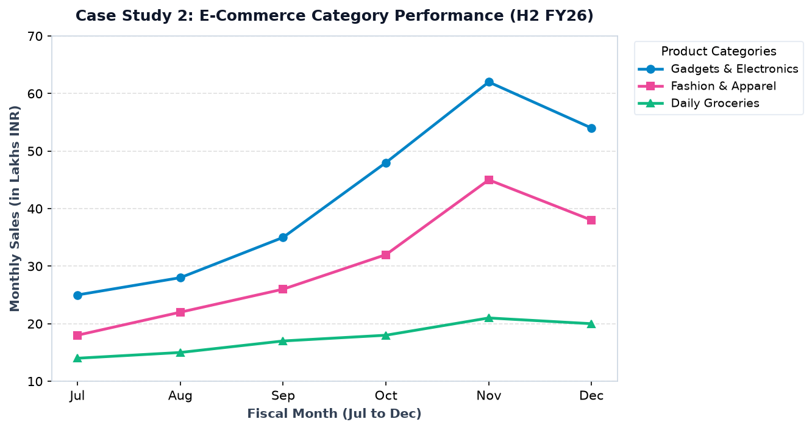
Figure 10.16: Multi-category dashboard with outside legend (bbox_to_anchor=(1.02, 1)), explicit Rupee units, and subtle horizontal grid.
| Element | Weak / Problematic Example | Professional / Recommended Example |
|---|---|---|
| Title | "Graph 1" or "Sales vs Time" | "Quarterly E-Commerce Revenue Growth (FY 2026)" |
| X-Axis Label | "Time" or "Hours" | "Weekly Study Preparation Time (Hours)" |
| Y-Axis Label | "Money" or "Revenue" | "Turnover in Lakhs INR (₹)" |
| Legend | "Line 1", "Line 2" inside data curves | "Actual Sales", "Target Quota" in outside box |
| Grid Lines | Solid black thick lines covering points | Dashed grey lines: color='#cbd5e1', alpha=0.5 |
| Tick Labels | Overlapping horizontal long category strings | Rotated 35°–45° with ha='right' |
Scenario: Ek smart electric vehicle (EV) charging station par 24 ghante ka power load (kW) measure kiya gaya, aur station dynamic pricing tariff (Rs./kWh) follow karta hai.
Task: Ek integrated chart banayein jisme Power Load (kW) primary left Y-axis par ho aur Dynamic Tariff (Rs./kWh) secondary right Y-axis par ho (Twin Axes), with combined legends aur crisp gridlines!
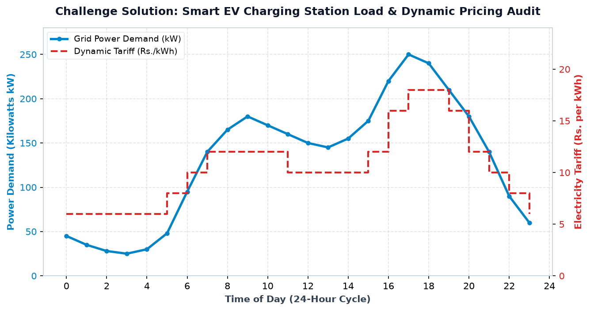
Figure 10.17: Challenge Solution. Primary left Y-axis (blue) shows power load peaking at 250 kW at 17:00 (5 PM), while secondary right Y-axis (red) shows stepped dynamic tariffs peaking at Rs. 18/kWh.
| Method | Key Arguments | Code Snippet |
|---|---|---|
ax.set_title() |
fontsize, fontweight, color, pad, loc |
ax.set_title("Sales Audit", fontsize=12, pad=12) |
ax.set_xlabel() |
fontsize, fontweight, labelpad |
ax.set_xlabel("Time (Hours)", labelpad=8) |
ax.set_ylabel() |
fontsize, fontweight, labelpad |
ax.set_ylabel("Revenue (Lakhs ₹)", labelpad=8) |
ax.legend() |
loc, title, ncols, bbox_to_anchor, frameon |
ax.legend(loc='upper left', bbox_to_anchor=(1.02, 1)) |
ax.grid() |
axis, which, color, linestyle, alpha |
ax.grid(axis='y', linestyle='--', alpha=0.5) |
ax.minorticks_on() |
None | ax.minorticks_on() |
fig.suptitle() |
fontsize, fontweight, y |
fig.suptitle("Executive Dashboard", y=1.02) |
bbox_to_anchor if chart data is crowded.ha='right' solves category collisions.Chart labeling and contextual annotation master karne ke baad hum Matplotlib ke Color Palettes, Stylesheets & Custom Themes explore karenge!
Matplotlib Topic 11: Colors, Styles & Themes mein aap seekhenge:
plt.style.use('seaborn-v0_8') aur 'ggplot'.